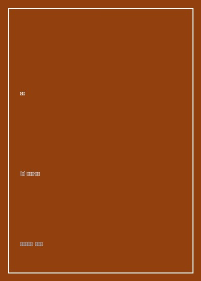

《故事》

总体观点
故事绝非自恋文人的随性呓语或机械套用商业公式的行活，而是一门基于人类心理体验与哲学真理的‘结构力学艺术’。好莱坞流水线生产的平庸烂片之所以令人作呕，是因为创作者试图用浮夸的视听特效掩盖剧作结构与核心价值论题的苍白；而先锋艺术片的空洞无聊，则源于放弃了对观众情感共鸣规律的敬畏。真正伟大的故事，是形式与实质的高度统一。
冲突是故事的终极生命线。没有冲突，戏剧便不复存在。麦基提出了经典的‘冲突三层级理论’：内心冲突（欲望与良知、理智与恐惧的自我撕扯）、个人冲突（夫妻、亲友、同僚之间的亲密人际对抗），以及个人外冲突（社会体制、自然灾难、意识形态等宏观制度对抗）。一个具有真正深度的场景，必须让主人公在这三层冲突的绞杀下被迫做出‘在不可调和的两种善之间，或在两种不可避免的恶之间’的非两难抉择。
人物性格（Characterization）与人物真相（True Character）存在着本质分水岭。外表、谈吐、职业、发型与喜好仅仅是人物表象；唯有当人物被逼入绝境、面临不可承受的极端压力时，他所做出的舍生取义或卑劣背叛的终极道德选择，才揭示其真实的灵魂本质。故事的戏剧弧光（Character Arc），正是通过一轮轮节拍与递进危机，彻底剥开人物表象、促成其内心世界发生根本性不可逆质变的蜕变历程。
核心观点
-
1. 激励事件与生活平衡的不可逆打破
故事必须始于‘激励事件（Inciting Incident）’。它彻底打破了主人公原本平静的生活天平，在其内心激发出不可遏制的执念欲望（想夺回失窃的宝物、拯救濒死的亲人），并逼迫其踏上一条充满阻碍的不归路。
《教父》中老柯里昂在街头遭遇刺杀身受重伤的枪声，彻底击碎了迈克尔远离家族黑帮犯罪、做一名清白二战老兵的平静天平，逼迫其迈入权力血途。 -
2. 鸿沟（The Gap）与预期与现实的剧烈撕裂
主人公带着合理的期待采取行动，以为世界会按照其设想回应；然而，现实的大门轰然关闭，客观世界在最后一秒展现出残酷的敌意与反作用力——这就是‘鸿沟’。每一次鸿沟的裂开，都强迫主人公掏出更深层的潜能并承担更高的风险。
《唐人街》中杰克·吉蒂斯自以为只是在调查一起寻常富商婚外情通奸案，随着案情撕开，他一步步跌入洛杉矶市政府水源垄断、政治谋杀与令人发指的乱伦深渊鸿沟之中。 -
3. 在两难困境中做出真正的道德抉择
如果让角色在‘善与恶’之间做选择，这毫无戏剧张力，因为任何人都会选善；真正的戏剧高潮必须把角色逼入‘在不可兼得的两种善之间选择，或在两种两害相权取其轻的恶之间选择’，这一刻的选择直接称量出角色的灵魂成色。
《索菲的选择》中纳粹集中营军官命令索菲在自己的两个亲生骨肉中挑一个送入毒气室，否则两人全部处死，这种极端的道德绞杀构成了人类文学史最具毁灭性的两难困境。 -
4. 节拍（Beat）与场景的价值负荷转向
一个合格的场景绝不能在价值层面原地踏步。如果在场景开始时男女主角的关系是‘信任（正值）’，在经历了一番交锋节拍后场景结束时关系依然是‘信任’，那么这个场景就是废戏。每个场景必须实现从正到负、或从负到正的价值电极反转。
《卡萨布兰卡》里克与伊尔莎在巴黎咖啡馆重逢的戏份：从最初久别重逢的旧情复燃狂喜（+），伴随伊尔莎神情闪烁与绝情离别的绝望崩溃（-），场景在极具密度的价值反转中充满压迫感。 -
5. 幕高潮（Act Climax）与不可逆转的意义终局
一出经典三幕剧必须通过三次层层递进的幕高潮推动。高潮必须具备‘意义的绝对不可逆性’——事件发生后，主人公的世界、价值观与人生航向被永久改写，再也无法回到故事开篇的原点状态。
《肖申克的救赎》第二幕高潮：安迪在广播室反锁房门为全监狱犯人播放莫扎特歌剧《费加罗的婚礼》，圣洁的音乐声穿透高墙铁丝网，那一刻囚犯们在精神上获得了不可磨灭的自由顿悟。
全书结构
-
第一部分 作家与故事艺术
探讨故事在当代人类文明精神饥渴中的神圣功能，反思影视工业商业俗套与艺术片晦涩空洞的根源，界定经典大情节、小情节与反情节的光谱。
对比《公民凯恩》《八部半》与《搜索者》，剖析经典因果线性叙事与意识流碎片叙事在调动人类共情机制上的本质差异。 -
第二部分 故事诸要素
全书理论核心，定义结构、节拍、场景、序列、幕与故事高潮的递进层级，解析故事母题、控制思想（Controlling Idea）与反面价值对抗。
详细拆解经典控制思想的表述公式：‘当主人公战胜了贪婪拥抱无私时，正义终将战胜腐朽（如《星球大战》）’，演示价值轴线如何统领全剧。 -
第三部分 故事设计原则
深入冲突的三大层级，详解激励事件、鸿沟产生机制、渐增危机、两难抉择、转折点与布局铺垫（Setup）与回报（Payoff）。
以《星球大战》《克莱默夫妇》等数十部经典影片为例，手把手演示如何在第一幕埋下看似微小的道具细节并在第三幕引爆情感核弹。 -
第四部分 作家在工作
从理论走向实战，探讨自底向上的剧本写作流程：人物深层心理谱系建立、对白潜台词（Subtext）处理、场景视觉化展示与剧本医生诊断术。
重写一段乏味的‘夫妇餐桌吵架’对白：剥离直白的宣泄台词，让两人表面在争论‘牛排烤得太老’，潜台词却在刀光剑影中宣判婚姻死亡。